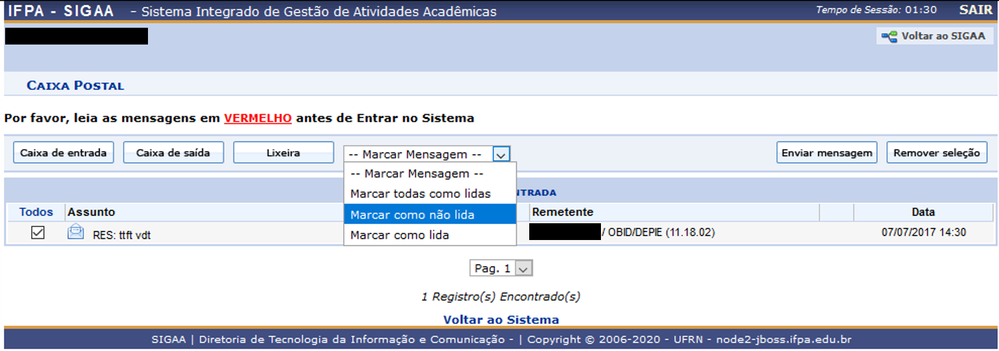

5. Caixa Postal¶
O módulo ‘Caixa Postal’ no SIGAA pode ser acessado pelo ‘Menu de acesso a aplicações’.
Visualizando os módulos disponíveis em sua conta.¶
A ‘Cx. Postal’ (Caixa Postal) é o ambiente pelo qual você pode conversar com a equipe do IFPA de forma oficial. Todas as interações ficam registradas. Por isso, faça uso consciente e aproveite este canal de comunicação.
Caixa de Entrada do módulo ‘Caixa Postal’.¶
A ‘Caixa de entrada’ é apresentada assim que você entra no módulo ‘Caixa Postal’, por aqui você poderá realizar as operações de envio, leitura e resposta a mensagens recebidas.
Seu nome aparece no cabeçalho desta tela. Deste painel temos as ações:
Voltar ao SIGAA: retorna ao Portal Discente.
Caixa de entrada: Exibe sua caixa postal com todas mensagens, lidas ou a serem abertas.
Caixa de saída: exibe as mensagens que você enviou.
Lixeira: Mensagens colocadas para serem apagadas.
–Marcar Mensagens–: É uma lista de ações em cascata. Você seleciona um grupo de mensagens e seleciona uma das ações desta lista. A ação afetará todos os e-mails selecionados.
Operações em cascata possíveis na ‘Caixa Postal’.¶
Enviar mensagem: redireciona o usuário a uma tela para redação de um novo e-mail.
Remover seleção: Remove o grupo de e-mail selecionado atualmente, desmarcando a seleção.
5.1. Lendo mensagens¶
Para ler uma mensagem, basta clicar na mesma em sua ‘Caixa de entrada’.
Visualização de mensagens da ‘Caixa de entrada’.¶
Na tela de leitura de mensagens apresentada você poderá retornar a ‘Caixa de entrada’, ‘Caixa de saída’, ‘Lixeira’ ou de forma cronológica de chegada dos e-mails, navegar para o e-mail ‘Anterior’ ou ‘Próximo’.
Todo e-mail possui em seu corpo informações de identificação, em nossa ‘Caixa Postal’ são, o ‘Assunto’, ‘Remetente’ (quem enviou para você o e-mail), ‘Unidade’, ‘Destinatário’, ‘Data/Hora’.
Quando você recebe um e-mail, pode ‘Responder’ o mesmo a seu ‘Remetente’, ‘Encaminhar’ a outro ‘Destinatário’, ‘Imprimir’ a mensagem ou ‘Remover’ o mesmo para ‘Lixeira’.
5.2. Enviar mensagem¶
Retornando a ‘Caixa de entrada’, você poderá enviar uma mensagem clicando na operação ‘Enviar mensagem’. As possibilidades impostas no SIGAA são diversas, você poderá buscar pelo seu destinatário (Para), sendo obrigatória a seleção de ao menos um, sendo que uma mesma mensagem pode ser enviada a várias pessoas simultaneamente, bastando clicar no ícone de sinal de adição (+).
O ‘Assunto’ da mensagem deverá ser preenchido, coloque informações que ajudem ao destinatário entender do que se trata o e-mail.
A ‘Caixa Postal’ possui editor sofisticado para mensagens e possibilita a anexação de arquivos.
Você ainda pode acompanhar a leitura dos e-mails enviados pelo SIGAA selecionando a caixa indicativa abaixo do espaço para mensagem, bem como pedir ao sistema para lhe enviar cópia do que está enviando.
Enviando uma nova mensagem da ‘Caixa Postal’.¶